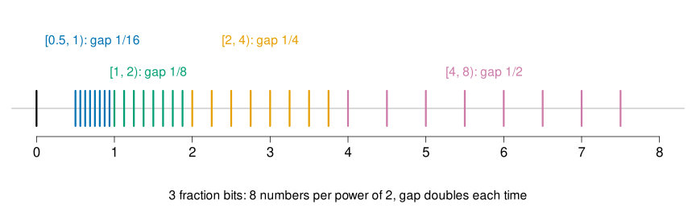
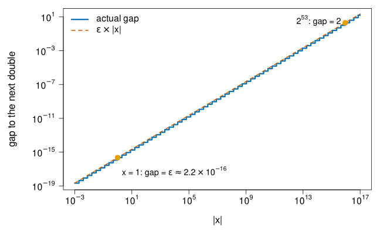

In Why numerical analysis? we met three ways a computation goes wrong: rounding, truncation and instability. This lecture is about the first one: where rounding comes from.
A computer stores a real number in 64 bits, in binary. Most decimals (even 0.1) cannot be stored exactly.
The numbers it can store are spaced relative to their size: about 16 significant digits, everywhere. That spacing is machine epsilon.
There is a largest and a smallest number. Go past them and you get Inf or 0 (overflow / underflow), or NaN.
Never test floats with ==; compare with a tolerance.
Biology: the likelihood of a long alignment (or of 10 000 reads) underflows to 0. The fix is to work with logs, add probabilities with log-sum-exp, and use log1p/expm1 for small rates.
A biology problem first
A phylogenetics program computes the likelihood of a tree from an alignment of 10 000 sites. Each site contributes a probability between 0.01 and 0.5; the sites are independent, so the likelihood is the product.
set.seed(1)p <-runif(10000, min =0.01, max =0.5) # per-site likelihoodsprod(p)# [1] 0sum(log(p))# [1] -16177.67
The true likelihood is about e^{-16178} \approx 10^{-7026}. Not zero, but smaller than any number R can store.
Two trees with likelihood “0” cannot be compared. The log of the same quantity is a perfectly ordinary number.
Why does this happen, and where exactly is the limit? That needs a look at how numbers are stored.
A second surprise
0.1+0.2==0.3# [1] FALSE0.1+0.2# [1] 0.3 # R prints 7 significant digits by defaultsprintf("%.20f", c(0.1, 0.2, 0.1+0.2, 0.3))# [1] "0.10000000000000000555" "0.20000000000000001110" "0.30000000000000004441"# [4] "0.29999999999999998890"
None of 0.1, 0.2, 0.3 is stored exactly. The sum lands on a different stored number than 0.3.
sprintf with "%.20f" shows more digits than print does; use it to see what is really stored.
Binary integers
Decimal uses powers of 10; binary uses powers of 2, with digits 0 and 1.
Only fractions with a power of 2 in the denominator (\tfrac12, \tfrac38, \tfrac{5}{16}) end. Like \tfrac13 = 0.333\ldots in decimal, \tfrac1{10} repeats forever in binary, so it must be cut off.
R’s numeric and Python’s float (and numpy’s float64) are all this format.
Floats are not evenly spaced
A toy system with only 3 fraction bits: 1.f_1f_2f_3 \times 2^e.

8 numbers between each power of 2 and the next. Each time you go up a power of 2, the gap doubles.
The relative gap is roughly constant: gap / x is between \tfrac1{16} and \tfrac18.
Any real number in between is rounded to the nearest tick.
Machine epsilon
Machine epsilon\varepsilon is the gap between 1 and the next double: \varepsilon = 2^{-52} \approx 2.2 \times 10^{-16}.
.Machine$double.eps# [1] 2.220446e-161+ .Machine$double.eps ==1# [1] FALSE1+ .Machine$double.eps /2==1# [1] TRUE # rounded back down to 1
.Machine lists the limits of the number system on your computer.
Rounding x to the nearest double has relative error at most \varepsilon/2 \approx 1.1 \times 10^{-16}.
That is why doubles are good to “about 16 significant digits”.
The gap grows with the number

Near x, the gap to the next double is about \varepsilon\,|x|. Exactly: 2^{\lfloor \log_2 |x| \rfloor - 52}.
Near 1000: gap 2^{9-52} = 2^{-43} \approx 1.1\times10^{-13}. Near 2^{53} \approx 9\times10^{15}: gap = 2.
Relative precision is fixed; absolute precision depends on the size of x.
Every operation rounds
IEEE rule: the result of +, -, \times, /, \sqrt{\ } is the exact result, rounded to the nearest double.
0.1 + 0.2:
stored 0.1 + stored 0.2 = 0.3000000000000000166\ldots (exact sum of two stored numbers)
nearest double: 0.30000000000000004441
stored 0.3: 0.29999999999999998890, one gap (2^{-54} \approx 5.6\times10^{-17}) below
(0.1+0.2) -0.3# [1] 5.551115e-17
Each step adds a relative error of up to \varepsilon/2. Over millions of steps these errors can add up, or (worse) be magnified. That is Error, conditioning and stability.
Never test floats with ==
x <-seq(0, 1, by =0.1)which(x ==0.3)# integer(0) # not found!which(abs(x -0.3) <1e-9)# [1] 4all.equal(0.1+0.2, 0.3)# [1] TRUEall.equal(1, 1.1)# [1] "Mean relative difference: 0.1" # not FALSE!isTRUE(all.equal(1, 1.1))# [1] FALSE
Compare with a tolerance: |a - b| \le \text{tol} \cdot \max(|a|, |b|) (relative), or |a-b| \le \text{tol} (absolute, near 0).
all.equal uses a relative tolerance of 1.5\times10^{-8}. In an if, wrap it in isTRUE().
Subtraction can lose digits
(1+1e-15) -1# [1] 1.110223e-15 # should be 1e-15: 11% wrong
1 + 10^{-15} is rounded to the nearest double near 1 (gap 2.2\times10^{-16}), so only about one significant digit of 10^{-15} survives.
The subtraction itself is exact; it just exposes the earlier rounding.
This is catastrophic cancellation: the topic of Error, conditioning and stability (e.g. the variance of genomic positions near 2.4\times10^8).
Integers
R has a separate integer type (32 bits, written 5L); plain 5 is a double.
Edge case: if every a_k = -\infty, then m - m is NaN. Production code handles that case separately.
Small rates: log1p and expm1
Mutation rate \mu = 10^{-9} per site per generation. P(\text{at least one mutation}) = 1 - e^{-\mu}.
mu <-1e-9print(1-exp(-mu), digits =15)# [1] 9.99999971718069e-10 # wrong from the 8th digitprint(-expm1(-mu), digits =15)# [1] 9.999999995e-10 # correctmu <-1e-171-exp(-mu); -expm1(-mu)# [1] 0# [1] 1e-17
e^{-\mu} is rounded to the nearest double near 1 (gap \varepsilon), and $1 - $ that keeps only the digits that survived.
expm1(x)= e^x - 1 and log1p(x)= \log(1+x) are computed without forming 1 + x. Use them when |x| \ll 1.
The same holds for \log(1 - p) with small p: use log1p(-p).
Checklist: detecting floating-point trouble
Exact zeros or -Inf in a likelihood → underflow. Work on the log scale.
Inf or NaN anywhere → overflow or 0/0. Check with is.finite() after each step.
== on computed numbers → replace with isTRUE(all.equal(a, b)) or an explicit tolerance.
1 - exp(-x) or log(1 + x) with small x → -expm1(-x), log1p(x).
exp() of a log-likelihood → take differences first, or use log-sum-exp.
Large whole numbers (coordinates, counts) as R integers → convert with as.numeric() before summing.
Doubt about the stored value → sprintf("%.20f", x).
Summary
A double is \pm 1.f \times 2^e in 64 bits: 53 significant bits, about 16 decimal digits, range about 10^{-308} to 10^{308}.
Most decimals (0.1) are not stored exactly. Every operation rounds to the nearest double, with relative error at most \varepsilon/2, \varepsilon = 2.2\times10^{-16}.
The gap between doubles near x is about \varepsilon |x|: relative precision is constant.
Compare floats with a tolerance (isTRUE(all.equal())), never ==.
Doubles hold whole numbers exactly up to 2^{53}; R integers only to 2^{31}-1.